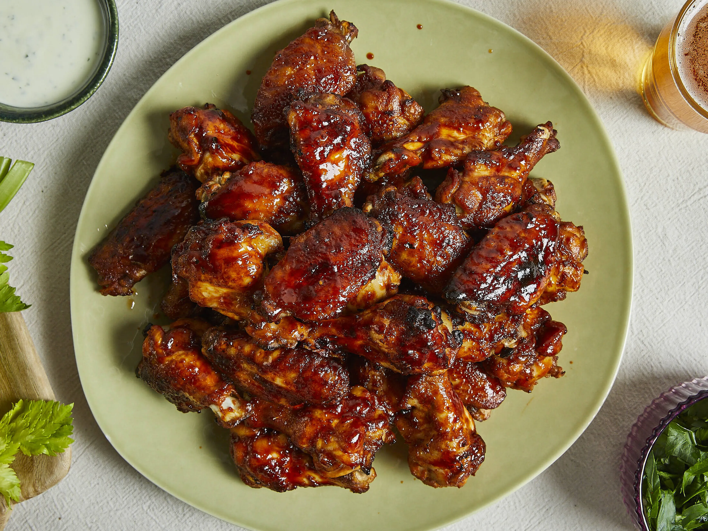

Chicken Wings

Oven baked chicken wings
Sticky, glazey, sweet and spicy all at the same time!
Serve your wings with your favorite hot sauce, ranch dip or just as they are.
Ingredients
- 1 kg chicken wing
- 2 tbsp white wine vinegar
- 2 tbsp mustard
- 50 ml vegetable oil
- 3 tbsp soy sauce
- ½ tsp Tabasco
- 1 tbsp tomato paste
- 4 tbsp brown sugar
- 2 tbsp hot paprika powder
- 2 cloves garlic
- 1 pinch cayenne pepper (optional)
- 1 tbsp salt
- 1 tbsp pepper
Steps
- Mix mustard, vegetable oil, soy sauce, tabasco, white wine vinegar, tomato paste, brown sugar, paprika, cayenne (if using), crushed garlic, salt, and pepper to create the marinade. Set ¼ marinade aside in the fridge to brush wings at the end of cook time.
- Next, marinate the chicken wings with the remaining ¾ marinade. Leave covered and chilled for at least 30 minutes or overnight to allow the flavors to sink in.
- Preheat the oven to 220°C/425°F. Now, take the marinated chicken wings, allowing any surplus marinade to drip off, and put on a baking rack or a baking sheet lined with parchment paper.
- Bake in preheated oven for approx. 30 min. until golden. Turn the wings after 15 min., so that they can brown evenly on both sides. At the end of 30 minutes, turn your oven to the grill setting. Brush wings once more with remaining marinade and grill skin-side-up for a further 2—5 minutes for perfectly glazed skin. Serve hot with chopped parsley, celery and your favorite sauces for maximum enjoyment.